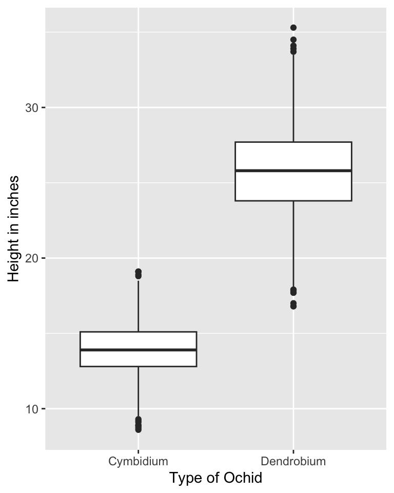
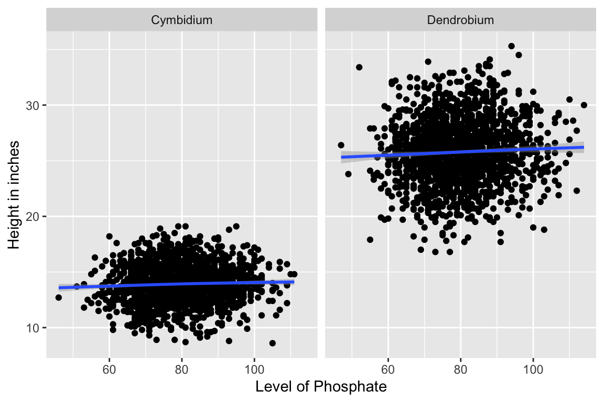
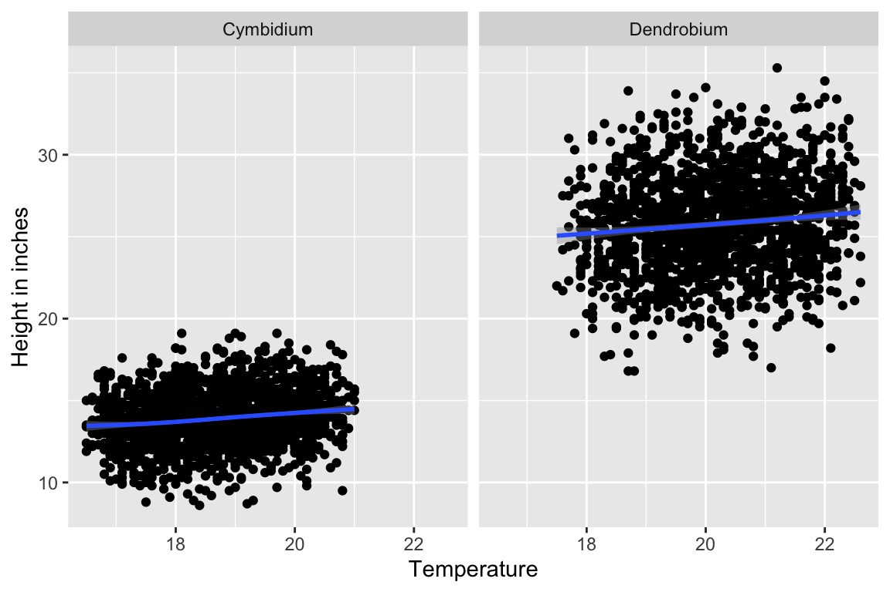
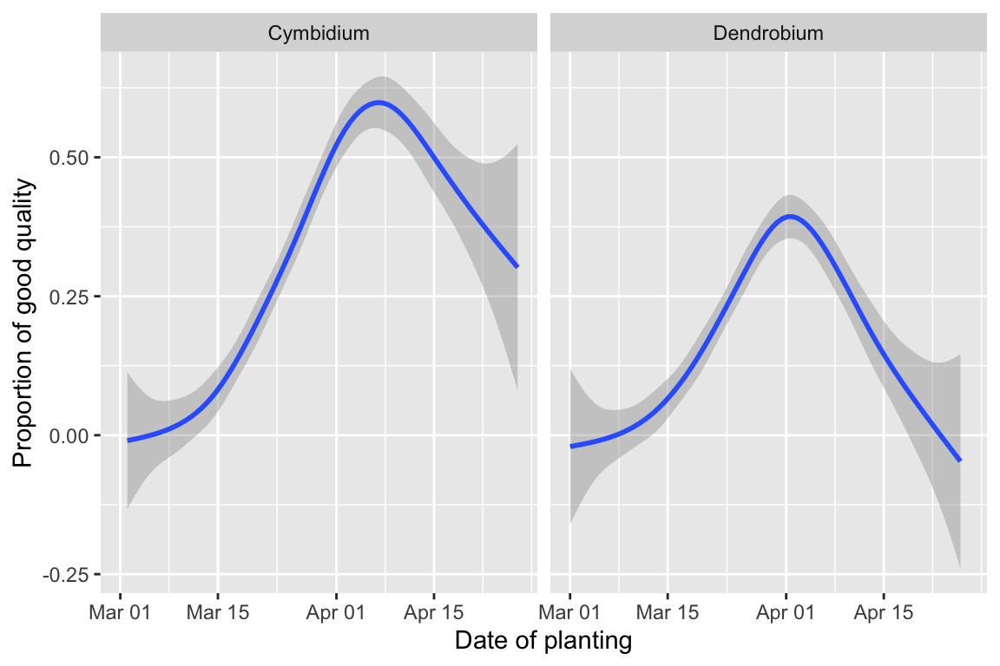

library(dplyr)
library(lubridate)
library(ggplot2)
library(patchwork)MA22019 2025 - Solutions for Homework 3
Mise en place
Homework
Solutions
Before starting the questions, please make sure to load the relevant R packages:
Homework Question - Optimizing growing conditions for orchids
A research institute set up an experiment in 2024 to determine the best growing conditions for two types of Orchids: Cymbidium and Dendrobium. The design of the experiment was as follows:
All orchids were planted in March or April 2024. Each individual orchid was exposed to constant temperature and phosphate levels, but levels differed across orchids.
The height (in inches) and quality of each orchid were measured on 20 October 2024. Plant quality was assessed using a score between 1 and 10 (1=very poor, 10=excellent). Any orchid with a score above 6 is considered of “good” quality.
The research institute approached us to analyze their collected data which provides:
Type - Type of the orchid.
Height - Height of the orchid on 22 October 2024.
Quality - Quality as measured on 22 October 2024.
Phosphate - The level of phosphate in ppm (parts per million) the orchid was exposed to since it had been planted.
Temperature - The temperature (in degree Celsius) the orchid was exposed to since it had been planted.
Planting - The date the orchid was planted.
The full data are provided in the file “Orchids.csv” and the research institute is interested in:
How do the two types of orchids compare in terms of the heights measured on 22 October 2024?
What are the effects of phosphate and temperature on the height of the orchids?
Did the date when the orchid was planted have any effect on whether their quality was at least “good” on 22 October 2024?
Perform an analysis which considers the three aspects above. Make sure to clearly state your approach and conclusions.
We start by loading the data:
Orchids <- read.csv( "data/Orchids.csv" )One approach to compare the heights is to create a box plot of height for each of the two types:
ggplot( Orchids, aes("x"=Type, "y"=Height) ) + geom_boxplot() +
labs( "x"="Type of Ochid", "y" = "Height in inches" )
We find that the orchids are markedly different in terms of their heights. For Cymbidium, most of the plants had a height between 10 and 20 inches, while the plant height for Dendrobium was more varied, ranging from 17 and 35 inches. There are also other aspects one may comment on.
We now explore the relation between temperature/phosphate and plant height. Due to the large differences in height, this analysis is done separately for both types:
ggplot( Orchids, aes(x=Phosphate, y=Height) ) +
facet_wrap(~Type) + geom_point() + geom_smooth() +
labs( "x"="Level of Phosphate", "y" = "Height in inches" )`geom_smooth()` using method = 'gam' and formula = 'y ~ s(x, bs = "cs")'
ggplot( Orchids, aes(x=Temperature, y=Height) ) +
facet_wrap(~Type) + geom_point() + geom_smooth() +
labs( "x"="Temperature", "y" = "Height in inches" )`geom_smooth()` using method = 'gam' and formula = 'y ~ s(x, bs = "cs")'
We find that the average plant height seems to increase slightly with increasing temperature, and the same applies for phosphate.
For the final aspect, we want to explore whether the proportion of orchids of “good” quality varies across the different planting dates. For this we convert the variable Planting and define a binary variable to represent whether the quality was at least “good”:
Orchids <- Orchids %>%
mutate( Good = case_when( Quality>6 ~ 1 , Quality<7 ~ 0 ) ) %>%
mutate( Planting = as_date( Planting, format="%Y-%m-%d" ) )We now get an estimate for the proportion of “good” orchids relative to planting date, and we again consider the two types of orchid separately:
ggplot( Orchids, aes( "x"=Planting, "y"=Good ) ) +
facet_wrap( ~Type ) + geom_smooth() +
labs( "x"="Date of planting", "y"="Proportion of good quality" )`geom_smooth()` using method = 'gam' and formula = 'y ~ s(x, bs = "cs")'
Generally speaking, orchids planted in late March/ first half of April were more frequently of at least “good” quality than the orchid planted in early March or late April. There are also other aspects one may comment on.